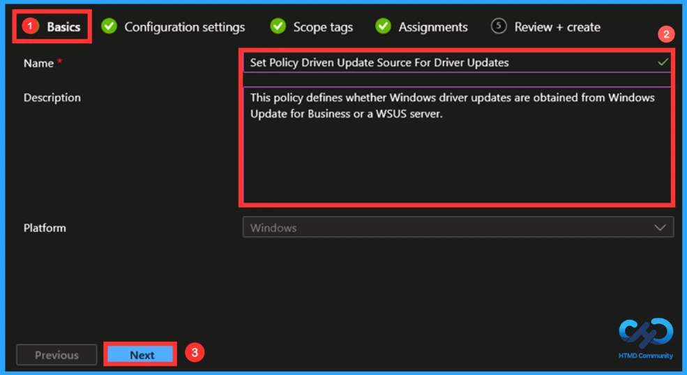
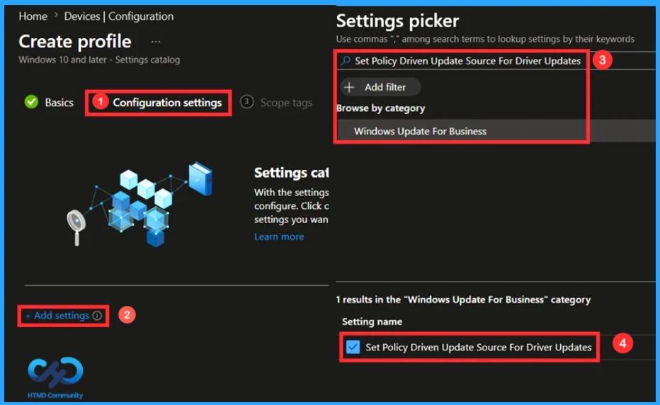
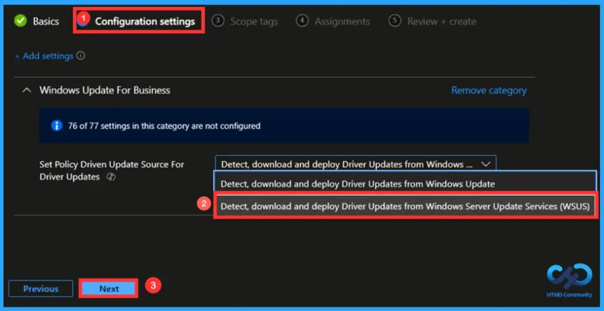
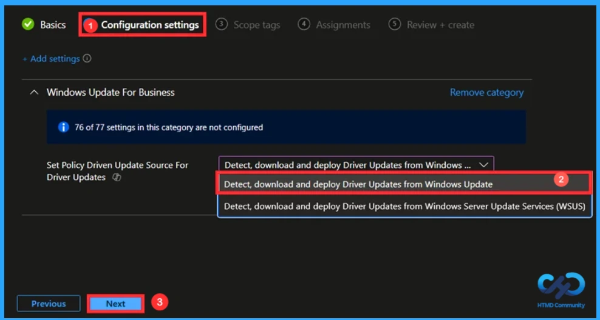
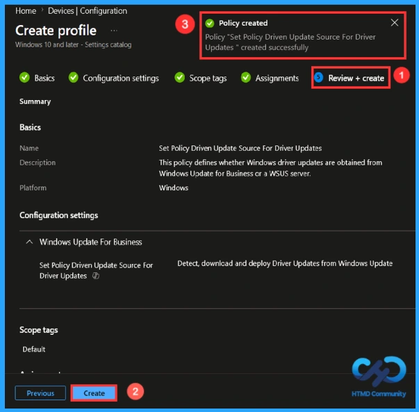
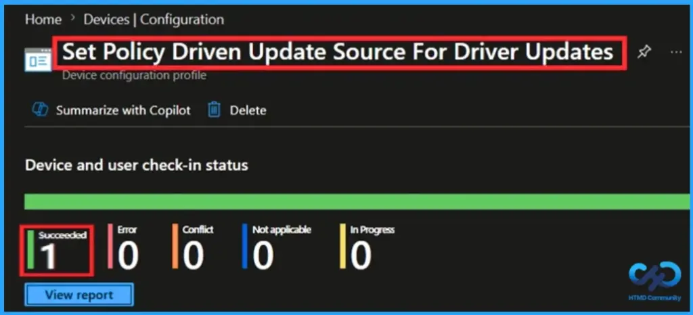
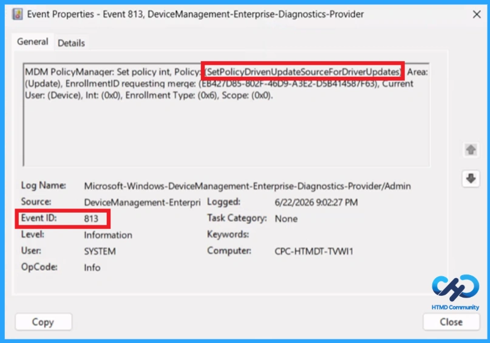
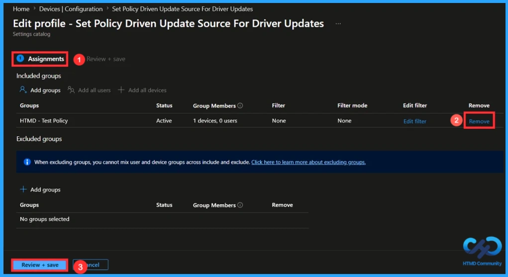
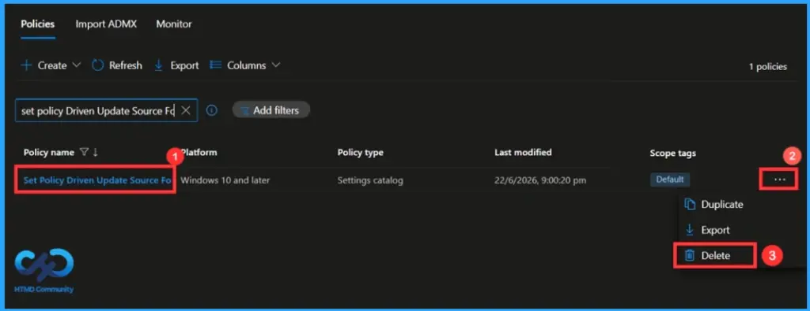

Key Takeaways
- This policy helps to ensure access to Microsoft-validated drivers.
- Helps resolve hardware-related issues quickly.
- Supports newer hardware features and functionality.
- Provides a consistent update experience across devices.
- Minimises compatibility issues after Windows updates.
Hey, let’s learn to deploy driver updates from WSUS instead of Windows update using Intune to test approve and schedule deployments. This policy enables devices to automatically receive and install driver updates from Windows Update. Configure this policy to specify whether to receive Windows Driver Updates from Windows Update endpoint, managed by Windows Update for Business policies, or through your configured Windows Server Update Service (WSUS) server.
Table of Contents
What are the Advantages of this Policy?
This policy helps to manage driver updates on Windows devices. It ensures that devices automatically detect, download, and install the latest driver updates from Windows Update.
1. Keeps device drivers updated automatically.
2. Improves hardware performance and stability.
3. Reduces manual effort for driver management.
Deploy Driver Updates from WSUS Instead of Windows Update using Intune to Test Approve and Schedule Deployments
This policy automatically updates device drivers, improving performance and reducing manual work for administrators.
How To Create the Policy
To Create the policy, the first step that you need to take is to sign in to the Microsoft Intune Admin Center. Then click on the Devices which appear on the left side of the screen and then choose Configuration from a list of options. Click on the Create down arrow and then choose New Policy.

How to Create a Profile
To create the policy, you need to specify the Platform and Profile Type. From the Window, choose the platform as Windows 10 and later and profile type as settings catalog.

Basics Tab to Name the Policy
In the Basics Tab, you can easily enter the Name and Description of the policy that you have selected. Entering the name of the policy helps to analyse your policy. Naming the policy is mandatory, but giving a description is not necessary. Here, I gave the policy name as (set policy-driven update for driver updates) and description as (This policy defines whether Windows driver updates are obtained from Windows Update for Business or a WSUS server). Click Next to continue.

Configuration Tab in this Policy
Configuration Tab helps you to choose which policy you need to create. To select the policy, click on the Add Settings, and then a box will pop up from which you can select your policy. Here, I searched for the name of the policy (set policy-driven update source for driver updates). Click on the policy category (Windows update for business) and enable the setting name so that the details of the particular policy will be displayed on the configuration tab.

Default Settings in this Policy
This policy controls whether driver updates are downloaded from Windows Update or from an organisation’s WSUS server. By default, Windows devices obtain driver updates from Windows Update unless configured to use another update source, such as WSUS (Windows Server Update Services).
- By default, Detect, download and deploy driver updates from Windows Server Update Services(WSUS) will be selected.
- If you wish to create this policy using this option, click Next to continue.

Enabling this Policy
This policy enables devices to receive and install driver updates directly from Windows Update, ensuring up-to-date hardware support. This option provides the latest certified drivers from Microsoft.
- Here, I selected the Detect, download and deploy driver updates from Windows Update option to create the Policy.
- Then, click on Next.

Scope Tag to Control Visibility
Adding the Scope Tag is not a necessary step. Scope Tag is used to control the visibility. Since this step is not mandatory, I skipped it. You can add this if you want using the select scope tags button. Click Next to continue.

Assignments Tab to Add Group
In the Assignment Tab, you can add the group. You can add the group either by including or by excluding. To add the group, click on Add Group and select the particular group from the list of groups. Include groups define who receives the policy, while exclude groups specify who is exempt from it.
- Here I Include 1 Group HTMD- Test Policy
- Click Next to continue

Finalising the Policy
At the Review + Create tab, you can view the overview of the details that you have entered before. In short, it displays the summary of the content. You can view the details and make any changes by using the Previous option. After making the changes, click on Create to finish. Then, a notification confirms that your policy has been created successfully.

Monitoring Status
To view a policy status, go to the Devices > Configuration in the Intune portal, click on the particular policy (set policy driven update source for driver updates) and check whether the succeeded value has become 1 or not. Since it takes too much time, you can easily speed up this process using the manual sync option in the company portal.

Client-Side Verification
To confirm if a policy has been applied, use the Event Viewer on the client device. Go to Applications and Services Logs > Microsoft >Windows >Device Management > Enterprise Diagnostic Provider > Admin. From the list of policies, use the Filter Current Log option and search for Intune event 813.
MDM PolicyManager: Set policy int, Policy: (SetPolicyDrivenUpdateSourceForDriverUpdates), Area:
(Update), EnrollmentID requesting merge: (EB427D85-802F-46D9-A3E2-D5B414587F63), Current
User: (Device), Int: (0x0), Enrollment Type: (0x6), Scope: (0x0).

How to Remove an Assigned Group from this Policy
If you need to remove the assigned group for any kind of reason. Select the Devices>Configuration and then search the policy name “Set Policy Driven Update Source For Driver Updates” then click on the Edit button. Then, click on the Remove button. Click Review + Save after making the changes. Otherwise, the changes that you made won’t save.
For detailed information, you can refer to our previous post – Learn How to Delete or Remove App Assignment from Intune using by Step-by-Step Guide.

How to Delete this Policy from Intune Portal
If you want to delete this policy for any reason, you can do it easily. First, search for the policy name (set policy driven update source for driver updates) in the configuration section. When you find the policy name, click the 3-dot menu next to it and tap the Delete option.
For more information, you can refer to our previous post – How to Delete Allow Clipboard History Policy in Intune Step by Step Guide.

Need Further Assistance or Have Technical Questions?
Join the LinkedIn Page and Telegram group to get the latest step-by-step guides and news updates. Join our Meetup Page to participate in User group meetings. Also, Join the WhatsApp Community and WhatsApp Channel to get the latest news on Microsoft Technologies. We are there on Reddit as well.
Author
Anoop C Nair has been Microsoft MVP from 2015 onwards for 10 consecutive years! He is a Workplace Solution Architect with more than 22+ years of experience in Workplace technologies. He is also a Blogger, Speaker, and Local User Group Community leader. His primary focus is on Device Management technologies like SCCM and Intune. He writes about technologies like Intune, SCCM, Windows, Cloud PC, Windows, Entra, Microsoft Security, Career, etc.